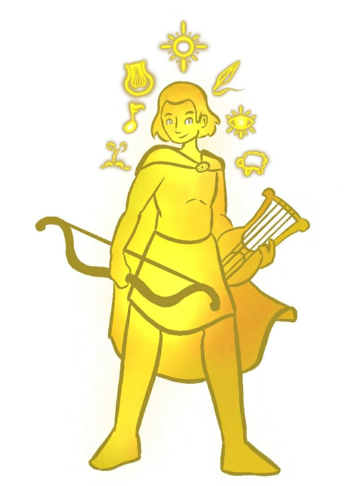

Apolo, dios del sol, la música, la luz y las artes proféticas.

Zeus, rey de los dioses, señor del cielo y del trueno.

Hades, dios del inframundo y guardián de las almas.

Poseidón, dios del mar, los terremotos y los caballos.